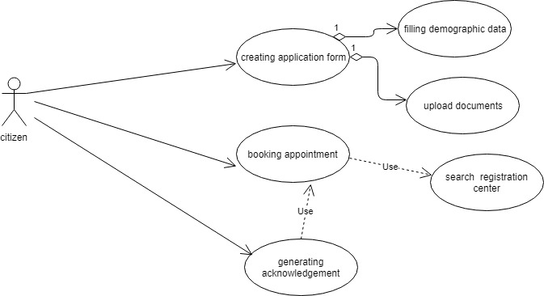

1. Overview¶
Pre-registration module is the web channel of the MOSIP. Key architectural styles followed are:
Microservice based architecture,
Data validation are done in UI,
The User Interface is a reference implementation
Master data and services are considered as part of pre-registration foundation. Following are few key design pattern aggregate service pastern, proxy design pattern and dependency injection.
2. Architecture view¶
1. Use case¶

1.1 Fill up demographic details¶
Actor- citizen
** Pre condition **- should be log in to system.
scenario:
* configured demographics data has been displayed.
* virtual keyboard would be available for the corresponding language.
* citizen fills up the details.
* same information would be defined in right hand side as in secondary language.
**post condition**
Summary of the application created would be displayed in dashboard.
1.2 Upload document¶
Actor- citizen
** Pre condition **- Demographic details have been filled.
scenario:
* configured document category and type would be displayed and citizen would select.
* citizen would upload documents.
* citizen could view the document uploaded.
**post condition**
Summary of the application created would be displayed in dashboard.
1.3 Search registration center¶
Actor- citizen ** Pre condition **- Demographic details have been filled and documents have been uploaded. scenario: * configured search options should be visible. * user would search for the registration center. * Would display list of registration centers. post condition Citizen could select one registration center for booking.
1.4 Booking application¶
Actor-citizen ** Pre condition **- User has selected the registration center. scenario: * Booking availability has been displayed for configured number of days. * User selects the slot. * User confirms booking. post condition User would get acknowledgement of the booking.


3. Security design consideration¶
Exception handlers catch Exception class to support both school of thought to raise RuntimeExcpetion and Exception class. BUt this design doesn't advocate to catch exception like NullPOinterException and should be avoided.
Exception should be logged into file NOT console.
Captcha should be present in places where PII like phone number or emial id is being taken. For example, notification screen in acknowledgement page.
Sanitization of UI scripts.
Avoidance of implementation of embedded javascript framework.